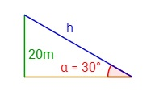
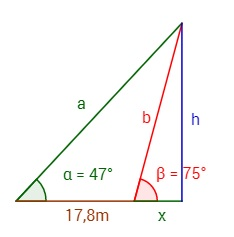
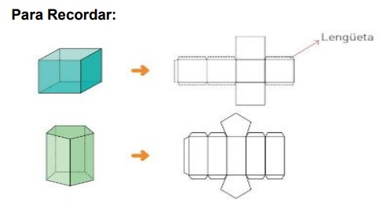
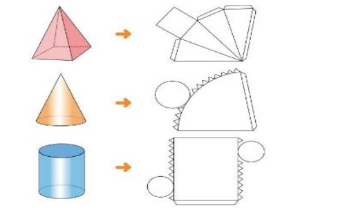
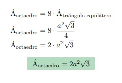

Geometría
La geometría (del latín geometrĭa, y este del griego γεωμετρία de γῆ gē, ‘tierra’, y μετρία metría, ‘medida’) es una rama de las matemáticas que se ocupa del estudio de las propiedades de las figuras en el plano o el espacio,1 incluyendo: puntos, rectas, planos, politopos (que incluyen paralelas, perpendiculares, curvas, superficies, polígonos, poliedros, etc.).
Es la base teórica de la geometría descriptiva o del dibujo técnico. También da fundamento a instrumentos como el compás, el teodolito, el pantógrafo o el sistema de posicionamiento global (en especial cuando se la considera en combinación con el análisis matemático y sobre todo con las ecuaciones diferenciales).
Sus orígenes se remontan a la solución de problemas concretos relativos a medidas. Tiene su aplicación práctica en física aplicada, mecánica, arquitectura, geografía, cartografía, astronomía, náutica, topografía, balística etc., y es útil en la preparación de diseños e incluso en la fabricación de artesanía.
Videos
Este video es la primera parte de la serie de Geometría, donde se explica todo lo que deben saber para superar la Prueba de Transición (Ex PSU).
¿Sabías Qué?
Su origen etimológico proviene del latín geometría (de gē, 'tierra', y metría, «medida») y sirve para solucionar problemas concretos como medir áreas y volúmenes, preparar diseños e incluso fabricar artesanías. Así, en geometría vemos cuáles son las propiedades de las figuras dentro de un plano.
Aprende Jugando
1. El triángulo ABC de coordenadas A(4,1), B(2,5) y C(1,3) se traslada formando el triángulo de coordenadas A'(7,3), B'(5,7) y C'(4,5). El vector correspondiente a esta traslación es:
a) (-3,-2) b) (-3,2) c) (3,-2) d) (3,2) e) (2,3)
2. Al punto de coordenadas (2,0) se le aplica una rotación de 90° en torno al punto (2,2). ¿Cuál es la nueva coordenada de este punto?
a) (-2,0) b) (0,2) c) (0,-2) d) (2,2) e) (-2,-2)
Dejanos tus Comentarios
Teorema de Pitágoras
El teorema de Pitágoras establece que, en todo triángulo rectángulo, la longitud de la hipotenusa es igual a la raíz cuadrada de la suma del área de los cuadrados de las respectivas longitudes de los catetos. Es la proposición más conocida entre las que tienen nombre propio en la matemática.
Teorema de Pitágoras
En todo triángulo rectángulo el cuadrado de la hipotenusa es igual a la suma de los cuadrados de los catetos.
Pitágoras
Si en un triángulo rectángulo hay catetos de longitud a y b, y la medida de la hipotenusa es c, entonces se cumple la siguiente relación:
a^{2}+b^{2}=c^{2}
De esta ecuación se deducen tres corolarios de verificación algebraica y aplicación práctica:
{\displaystyle a={\sqrt {c^{2}-b^{2}}}}a={\sqrt {c^{2}-b^{2}}} {\displaystyle b={\sqrt {c^{2}-a^{2}}}}b={\sqrt {c^{2}-a^{2}}} {\displaystyle c={\sqrt {a^{2}+b^{2}}}}c={\sqrt {a^{2}+b^{2}}}
Videos
Breve explicación del Teorema de Pitágoras, explicación de que quiere decir el Teorema de Pitágoras y como reconocer los catetos e hipotenusa en un triángulo rectángulo.
¿Sabías Qué?
También descubrió que si el triangulo tiene un ángulo con 90 grados, y colocas un cuadrado sobre cada uno de los lados de este triangulo, el cuadrado mas grande (el cual se encuentra en el lado de la hipotenusa) tendrá la misma área que los otros dos cuadrados juntos
Aprende Jugando
1. Calcular la hipotenusa del triángulo rectángulo de lados 3cm y 4 cm.
Si la hipotenusa de un triángulo rectángulo mide 2cm y uno de sus lados mide 1cm, ¿Cuánto mide el otro lado?
Calcular la hipotenusa del triángulo rectángulo cuyos lados miden 325cm y 489cm.
Un parque de diversiones quiere construir una nueva atracción que consiste en una tirolesa que parte desde la base superior de una columna con forma cilíndrica. Si el radio de la columna es R = 2m metros y el área de su lateral es de 120 metros cuadrados, calcular la longitud del cable de la tirolesa para que alcance el suelo a 40 metros de distancia de la columna.
Dejanos tus Comentarios
Trigonometría
La trigonometría es una rama de la matemática, cuyo significado etimológico es 'la medición de los triángulos'. Deriva de los términos griegos τριγωνοϛ trigōnos 'triángulo' y μετρον metron 'medida'.
En términos generales, la trigonometría es el estudio de las razones trigonométricas: seno, coseno, tangente, cotangente, secante y cosecante. La trigonometría se aplica a otras ramas de la geometría, o la geometría analítica en particular geometría plana o geometría del espacio. En soluciones de ecuaciones diferenciales ordinarias ( y = y´´), series de Fourier usadas en ecuaciones en derivadas parciales. Se usa en la mecánica.
Posee numerosas aplicaciones, entre las que se encuentran: las técnicas de triangulación, por ejemplo, son usadas en astronomía para medir distancias a estrellas próximas, en la medición de distancias entre puntos geográficos, y en sistemas globales de navegación por satélites.
Videos
Aprender trigonometría desde cero. Curso completo de trigonometría. En este vídeo te presento los temas más importantes de la trigometría, la parte de las matemáticas que se dedica al estudio de la relación entre los lados de los triángulos y sus ángulos.Una gran cantidad de ejercicios resueltos paso a paso en donde también se muestra la teoría necesaria para su resolución.
¿Sabías Qué?
La trigonometría es, atendiendo al significado etimológico de la palabra, la medición de los triángulos (del griego trigono y metron). La trigonometría forma parte de la ciencia matemática y se encarga de estudiar las razones trigonométricas de seno, coseno, tangente, cotangente, secante y cosecante.
Aprende Jugando
Se desea sujetar un poste de 20 metros de altura con un cable que parte de la parte superior del mismo hasta el suelo de modo que forme un ángulo de 30º.
Calcular el precio del cable si cada metro cuesta 12$.
Desde una determinada distancia, una bandera situada en la parte superior de un torreón se observa con un ángulo de 47º. Si nos acercamos 17,8 metros al torreón, la bandera se observa con un ángulo de 75º.
Calcular la altura a la que se encuentra la bandera.
Nota: para simplificar los cálculos podemos escribir tan(α) (tangente de α) en lugar de sin(α)/cos(α).
Dejanos tus Comentarios
Volumen
El volumen1 es una magnitud métrica de tipo escalar2 definida como la extensión en tres dimensiones de una región del espacio. Es una magnitud derivada de la longitud, ya que en un ortoedro se halla multiplicando tres longitudes: el largo, el ancho y la altura. Matemáticamente el volumen es definible no solo en cualquier espacio euclídeo, sino también en otro tipo de espacios métricos que incluyen por ejemplo a las variedades de Riemann.
Desde un punto de vista físico, los cuerpos materiales ocupan un volumen por el hecho de ser extensos, fenómeno que se debe al principio de exclusión de Pauli. La noción de volumen es más complicada que la de superficie y en su uso formal puede dar lugar a la llamada paradoja de Banach-Tarski.
La unidad de medida de volumen en el Sistema Internacional de Unidades es el metro cúbico. En el sistema métrico decimal, una unidad de volumen para sólidos era el estéreo, igual al metro cúbico, pero actualmente poco usada. En ese mismo sistema, para medir la capacidad de líquidos, se creó el litro, que es aceptado por el SI. Por razones históricas, existen unidades separadas para ambas, sin embargo están relacionadas por la equivalencia entre el litro y el decímetro cúbico:
1 dm³ = 1 litro = 0,001 m³ = 1000 cm³.
Videos
Breve introducción al volumen del prisma recto, con ejemplos de diferentes prismas y explicación de las partes más importantes del prisma resto e inicio a la fórmula del volumen del prisma, dentro del curso de Área y Volumen de sólidos.
¿Sabías Qué?
El volumen indica la cantidad de espacio que ocupa un cuerpo geométrico o un objeto, es decir, todo lo que nos rodea. Se mide en unidades cúbicas (m3) porque se multiplican tres dimensiones: ancho, alto y largo o profundo; cada dimensión se mide en uni- dades de longitud (m).
Aprende Jugando
1. Una piscina tiene forma de prisma hexagonal. El lado de su base mide 15 m y la altura 3,5 m. ¿ Cuanto costará llenarla si el litro de agua está a 0.02 €?
2. Queremos hacer un tetra brik de base cuadrada de 8 cm de lado y con capacidad de 2 L. ¿Cuánto cartón necesitaremos?
3. Calcular el peso de una esfera maciza sabiendo que la densidad es de 8 kg/cm3 y cuyo radio mide 4 cm.
4. Calcula el radio de una esfera de volumen 2 litros.
5. Las dimensiones de un depósito de agua son 10 m x 7 m x 5 m. Dibuja y calcula cuantos litros de agua coontendrá el deposito cuando esté completamente lleno.
6. Una lata de refresco, con forma de cilindro, contien 33 cl. Calcular el radio de la lata sabiendo que su altura es de 15 cm
7. Introducimos una bola de plomo de 0,5 m de radio en un depósito cilíndrico de 4 m de altura y 2 m de radio. Calcular el volumen de liquido necesario para llenar el recipiente.
Dejanos tus Comentarios
Red de Figuras Geométricas
Los cuerpos geométricos como los cubos y paralelepípedos pueden ser construidos a partir de dibujos de figuras en 2D. La red o plantilla de una figura 3D es la representación plana de esta. En ella se observan las figuras 2D que corresponden a las superficies de las figuras 3D. En las redes también se pueden observar lengüetas que sirven para poder pegar y construir la figura 3D.
 
Videos
En el siguiente video vas a encontrar la base de las redes de figuras geometricas y vas a descubrir las redes de muchas figuras.
¿Sabías Qué?
Octaedro: El octaedro es un cuerpo geométrico que está formado por 8 triángulos equiláteros congruentes, 6 vértices, 6 ángulos tetraedros, 12 aristas y 12 ángulos diedros. Para determinar la medida de la superficie total de este cuerpo geométrico debemos calcular el área de las 8 caras triangulares y luego sumarlas. Basándonos en los datos de la red del poliedro regular obtenemos la siguiente expresión para la superficie de un octaedro regular de lado a:

Aprende Jugando
- Se tiene un cubo de arista 9[cm] . Calcular:
- La diagonal de una de sus caras.
- La diagonal del cubo.
- El área total del cubo.
- Si la área total de un tetraedro regular es 180√3[m2] . Calcular:
- La arista del tetraedro regular.
- El área de una de sus caras.
- La altura de una de las caras de un icosaedro regular mide 15[mm] . Calcular:
- La arista del icosaedro regular.
- El área total del cuerpo geométrico.
- El área de una de las caras de un octaedro regular mide 20√3[dm2] . Calcular:
- La arista del cuerpo geométrico.
- El área total del cuerpo geométrico.
- El volumen del octaedro regular.